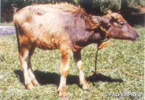
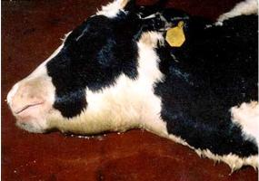
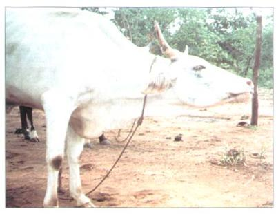

Adult Respiratory Diseases (new)
{kind=link}
The diseases listed in this chapter are primarily respiratory diseases of adult animals, but other diseases also display respiratory symptoms.
- Respiratory diseases of young animals are described under Young Animal's problems: Calf problems and Lambs and Goat Kids
- East Coast Fever produces foam in the lungs and cattle suffocate when the lungs fill up - click here for information on East cost Fever (ECF)
- There has also been a lot of discussion about Swine and avian flu - virus diseases that have become epidemics, but for which descriptions may come in later issues of this file.
Haemorrhagic Septicaemia (HS)
Borana: quando / Samburu: nalngiarrngarri / Somalia: kharar / Turkana: angaare
Haemorrhagic Septicaemia (HS) is a seasonally occurring acute killer disease of cattle, water buffaloes and pigs and is also suspected to affect camels. It is caused by very specific Pasteurella multocida serotypes B2 in Asia and E2 in Africa.
The disease occurs every year in south and east Asia. Occasionally outbreaks also occur in Africa, southern Europe and the Near East.
Only water buffalo and cattle are regularly affected. Animals which are weak at the end of the dry season and are exposed to sudden climatic stress, especially sudden and strong rain, can die from HS within 12 hours. The disease in Africa may suddenly appear and kill many animals and then not reappear for many years. The worst outbreaks occur during the rainy season.
- Spread between different herds is often occurs at communal watering points, where animals are close together and drink from the same water.
- Spread within a herd usually occurs at night when animals are enclosed.
- Indirect transmission can also occur.
- In areas where the disease is prevalent, small numbers of healthy animals, cattle and water buffalo carry the bacteria inside the nose and act as reservoirs of infection. Bacteria are then spread through the air.
- During an outbreak sick animals excrete large numbers of bacteria in runny noses, saliva and faeces.
- For several weeks after an outbreak 20-50% of animals carry the organism and are capable of infecting susceptible in-contact animals.
- The causal bacteria can survive for several hours in moist conditions, but die rapidly if exposed to sunlight or thorough drying.
In Africa where the disease does not occur every year, all age groups of cattle are affected.
|  |
| Buffalo calf clinically affected with Haemorrhagic Septicaemia |
| (c) FAO/EMPRES
|
- In general death rates are over 50% and may approach 100%.
- Most cases are peracute, resulting in death within 8-12 hours after onset. Because the course is so short, early clinical signs may easily be overlooked and treatment invariably comes too late.
- The first signs are dullness, reluctance to move and fever.
- Excess salivation and a clear nasal discharge appear.
- A common feature is oedema (swelling) of the laryngeal (throat) region, which spreads down to the brisket, and up to the region of the parotid gland near the ear. It sometimes involves the whole head.
- The tongue may swell and protrude and mucous membranes are congested. Affected animals have difficulty in breathing.
- Most animals collapse and die within a few hours. Recovery is rare. Very exceptionally an animal may remain sick for several days. Death is due to suffocation and to the release of toxins produced by the bacteria.
Anthrax, gas gangrene caused by clostridial bacteria, certain snake bites, systemic and pneumonic pasteurellosis (see below) should be considered, as these can occasionally give rise to similar swellings.
To confirm the diagnosis, a veterinary surgeon will take samples of tissue from blood, lung, liver and spleen and send these to a laboratory to determine the organism that has caused the disease. If the animal has been dead for longer than 8 hours, the disease can only be confirmed by examining the inside of a long bone, shipped to the lab on ice.
|  |
| Signs of Haemorrhagic Septicaemia |
| (c) USDA
|
- Swollen lymph nodes, fever and froth discharge from the mouth: See ECF (East Cost Fever) and MCF (under construction),
- Anthrax, Salmonellosis
Prevention - Control - Treatment
Treatment comes too late and is of little value once animals show disease signs, injecting an antibiotic may even cause a deadly crisis by causing death of organisms and the release of toxins produced by the bacteria.
Prevention
- Various sulphonamides, tetracylclines, penicillin and chloramphenicol are effective against HS if administered before signs of disease appear - once the disease has been recognized all healthy in-contact should be given a full therapeutic dose - this will normally stop further deaths.
- The principal means of prevention is by vaccination, which in Asia where the disease occurs regularly, should be carried out on an annual basis.
- Where the disease is not prevalent, the cost of regular vaccination may not be justified, but when an outbreak occurs, vaccination of healthy herds in the same area should be considered in order to control the spread of infection. - For already affected herds vaccination comes too late!
- Herd quarantine, the segregation of sick animals from healthy ones, and routine disinfection all help to slow the spread of disease between and within herds.
- In previously infected herds, natural immunity exists and occurrence rates and death rates are substantially lower than in herds not previously infected. Immune animals, however, can carry and transmit infection.
Systemic Pasteurellosis of Sheep and Goats (also called Septicaemic Pasteurellosis)
This disease of sheep and goats is caused by a few very specific types of Pasteurella bacteria (called Pasteurella trehalosi) and can be mistaken for Clostridial Enterotoxaemia or Anthrax. It is most common in young sheep.
Symptoms: Affected sheep can die quickly without disease signs. Sometimes froth from the mouth, dullness and very fast breathing can be seen before death.
Due to the extremely fast course there is no treatment. In dead sheep bleeding/haemorrhage under the skin and lung lesions may be found.
Only lab analysis can differentiate between Septicaemic Pasteurellosis, Enterotoxaemia and Anthrax. There are vet vaccines against all these three diseases, but only Anthrax and Enterotoxaemia vaccines are commonly available in Kenya/East Africa.
Pneumonic PASTEURELLOSIS
Outbreaks of Pneumonic Pasteurellosis are not related to HS and are caused by a variety of completely different types of Pasteurella multocida and also by bacteria called Mannheimia haemolytica. Because the disease is often seen in transported cattle it is also called 'Shipping Fever'. - Pneumonic Pasteurellois in sheep is very similar to the disease in cattle.
Causes: Transport and crowding stress coupled with viral infections lowers the defences of cattle and predispose them to the disease.
- Transporting animals under very stressful conditions may trigger an outbreak.
- Mixing together animals of completely different origin may also trigger an outbreak because a few of the animals may be carrying viruses and Pasteurella/Mannheimia types to which most of the others are not immune.
In most cases an initial (= primary) virus infection causes mild damage to the lung. Common respiratory viruses in cattle include Respiratory Syncytial virus, Para-influenza type 3 virus and Infectious Bovine Rhinotracheitis virus (IBR). The secondary (or super-) infection by Pasteurella or Mannheimia then takes advantage of the damaged lung tissue and quickly makes things much worse leading to acute severe and even deadly pneumonia. - In sheep and goats factors leading to Pneumonic Pasteurellosis include:
- Primary viral infections (e.g. Sheep & Goat Pox, PPR)
- Wet and/or chilly conditions (abrupt seasonal changes)
- Stress and crowding have an immune-suppressive effect on sheep/goats
- Poor body condition (e.g. due to high worm burden and/or poor nutrition)
- Introduction of new virulent Mannheimia and/or Pasteurella strains into a herd can directly trigger an outbreak, because none of the animals are protected against the new type
Pneumonic Pasteurellosis starts as a typical respiratory disease in cattle, sheep and goats. But from the beginning it may affect large numbers of animals becoming sick at the same time. The first respiratory symptoms look like ?flu?, with animals having fever and watery discharge. The symptoms then quickly progress to a fully established pneumonia, with thick purulent discharges, laboured breathing and extreme distress. If not treated, cattle can die within 4 to 7 days. In sheep, goats and calves the disease progresses much faster than in adult cattle. Weak lambs and kids can die within 24 hours.
The earlier the treatment is started the higher are the chances of avoiding lung damage and death. Animals that are treated after they already suffer from severe breathing problems may die or take much longer to recover and may not return fully back to normal (due to permanent damage they become stunted). Because timing of the treatment is crucial a good practice is to observe each animal for three to four full days, counting from the first day when it developed fever (stopped feeding or severe drop in appetite). If on day four, there are no clear sign of improvement and the condition continues to worsen antibiotic treatment should be initiated. Injections should be repeated daily for three days (when using long-acting oxytetracycline one injection is sufficient but treatment success must be monitored). In cases (very aggressive types of Pasteurella) where the lung disease is very severe from the start (high fever, extremely dull, laboured breathing) antibiotic therapy should begin immediately.
- Because stress factors related to management of the animals play a major role in pneumonic pasteurellosis, avoiding stressing of the animals is the most important prevention.
- In Europe and the US specific Pneumonic Pasteurellosis vaccines for cattle and sheep are available, but do not always work, because there are many different types of Pasteurella and Mannheimia.
Contagious Pleuropneumonia of cattle (Contagious Bovine Pleuro-Pneumonia - CBPP)
Luo: Athung'a / Kamba: kyambo / Kipsigis: chebwonit / Embu: kiviti / Gabbra: sombessa / Kikuyu: rimunia / Maasai: olkipei, longishu, ol gibei, ol kibiei / Meru: mohir / Samburu: ikipei / Somali: sambab, harwein, agmar / Swahili: ugonjwa wa mapafu / Turkana: loukoi, lotai / Luvugusu: madjukhu / Nandi: chepuonit / Rendile: ikipei /
Common names:
CBPP , "Contagious Bovine Pleuro-Pneumonia" of cattle
Introduction
This is the most important infectious respiratory disease of cattle in East Africa.
Contagious Bovine Pleuropneumonia is widespread in Africa, especially in the semi- arid countries south of the Sahara from West Africa to Somalia. It also occurs in India, China, and South East Asia. In the past CBPP was widespread in Europe, America, Australia and South Africa before being eradicated. In cattle the disease can be acute, subacute or chronic (rapid, mid-term or long term) and is characterised by pneumonia and other respiratory problems. In Kenya, Contagious Bovine Pleuropneumonia is practically absent from the highlands. CBPP is found most often in cattle from pastoralist area.
| WARNING: Notifiable disease! If you suspect an animal has CBPP, you must inform the authorities immediately. |
Mode of spread
The disease is transmitted between animals through the inhalation of droplets expelled by infected animals when they cough. The bacteria do not survive for long in the open environment hence direct contact is essential for transmission. Infection spreads faster where the animals are crowded together e.g. in houses, stables, night bomas, markets and during transportation and also at watering points.
The incubation period varies but in cattle most cases occur 3 - 8 weeks after exposure.
A serious aspect of the disease in cattle is the carrier animal, commonly referred to as a "lunger", which appears clinically normal but has the infection in its lungs. The infection is surrounded by fibrous tissue, walling it off from the rest of the lung. It may vary in size from the size of a pea to a large orange, but in time, perhaps after many months, the capsule may break down, allowing the still viable bacteria to escape through the bronchi and infect susceptible animals. The apparently healthy carrier animal therefore, is mainly responsible for the spreading the disease.
The disease in cattle is not dramatic and can easily go undetected. In a herd sometimes only 10%, of cattle are affected, although this may rise to 50% with a death rate ranging from 10% to 50% of those infected. Of recovered animals 25% may become carriers and remain a constant source of infection until they are slaughtered or die.
Signs of Contagious Pleuropneumonia: In Cattle
- Severe Bovine Pleuropneumonia is characterised by a rise in temperature, accelerated breathing, loss of appetite, and a dejected appearance.
- Later a cough develops, dry at first and then moist. The breathing becomes laboured, accompanied by a painful grunt.
")
Contagious Pleuropneumonia in Cattle (CBPP)
(c) USDA 2002
- A characteristic stance is assumed in which the animal faces the wind with its head extended and its elbows turned out in an effort to access more air.
- There may be a nasal discharge containing both mucus and pus and swelling of the lower part of the chest. The animal lies down and after 1-3 weeks it dies.
- Chronically affected cattle usually exhibit signs of varying intensity for 3-4 weeks, after which the animals appear to recover but they may be dangerous carriers, with walled-off lesions in their lungs.
|  | ![]() |
| Contagious Pleuropneumonia in cattle (CBPP) | Typical stance of cattle affected by CBPP showing extended and arched back, extended head and arched elbows. It has difficulty in breathing and shows "heave marks" from the strain |
| (c) FAO
| (c) Alan Provost |
Diagnosis
Post mortem lesions in cattle are very striking and there should be no difficulty in making a diagnosis when infected cattle are slaughtered. Often only one side of the lungs is affected. The lung has a mosaic or marbledappearance. It is no longer soft and filled with air but very firm, solid and dense, requiring force to cut it through with a knife. The lobules, which are consolidated, and gray, yellow or red in colour, are separated from each other by grossly distended septae containing beads of yellow lymph. Straw coloured fluid- up to 10 litres in cattle- fills the chest cavity, with thick, clotted masses of yellow fibrin lying over the exposed lungs. The lungs may is often stuck to the chest wall by adhesions.
CBPP cases in live cattle may be difficult to diagnose and can be confused with pneumonic Pasteurellosis.
Prevention - Control - Treatment
- Contagious Bovine Pleuropneumonia is a Notifiable Disease imposing a strict quarantine on any affected farm, within an endemic area. Animals will be tested and affected animals will be slaughtered. Quarantine may continue for up to 3-4 months after the last clinical case or reactor. Vaccination will not be allowed in non-endemic areas due to the risk of spreading the disease via the attenuated vaccine.
- Vaccination: An attenuated CBPP vaccine injected into the tip of the tail of cattle has been used in Kenya in endemic areas. In very few animals the vaccine can cause severe stress and even lead to necrosis (sloughingoff) of the tail.
- There are CBPP control programmes in most countries and farmers are encouraged to support, cooperate and work with those programmes. Vaccines against CBPP are used in such control programmes. The control programmes usually start with vaccinating twice per year then once yearly. In non-endemic (= not permanently CBPP infected) areas control programmes usually aim at test and slaughter of all infected animals.
- Sick animals should be isolated and kept strictly separated from healthy animals. The disease spreads by droplet infection only over short distances so separation is a vital control measure.
- Veterinary assistance should promptly be sought in the control of CBPP.
- Treatment of cattle is hotly debated but probably not justified in most cases because treated cattle if mixed with healthy ones may still spread the infection.
![]() |
| Vaccination through the tail tip. This vaccination should be done by trained veterinarians. Animals can loose part of their tails from careless vaccination for CBPP. |
| (c) Dr E.S. Kotonto
|
Contageous Caprine Pleuropneumonia - CCPP In Goats
| WARNING: Notifiable disease! If you suspect an animal has CCPP, you must inform the authorities immediately. |
CCPP is the most important infectious respiratory disease of goats in East Africa.
Contagious Caprine Pleuro-Pneumonia (CCPP) of goats closely resembles the disease in cattle but is more aggressive and more widespread in Kenya than CBPP. This disease is specific to goats and does not affect sheep, even when goats and sheep are in close contact. It can occur as peracute (fast killing, sometime seven without respiratory signs), acute or chronic highly contagious disease characterised by lung problems in goats.
Disease Signs:
In goats there may be sudden death without the appearance of any symptoms. In most cases of Contagious Caprine Pleuropneumonia there is
- Nasal inflammation and discharge
- A chronic cough
- Fever up to 41 degrees Celsius (106 degrees Fahrenheit)
- Weakness, loss of condition, lack of appetite, unwillingness to move
- General debility, with death after 2 to 3 days!!!
- "Lungers" do not occur in goats as they do in cattle. The incubation period in goats is shorter than in cattle, being 3-5 weeks
- The disease in goats is extremely contagious, affecting 100% of goats in a flock and killing 60-100% of them!!!
![]() | ![]() |
| Abnormal milk samples from goat with CCPP on left compared to normal goat milk on the right (c) R.A.J. Nicholas | Goat showing respiratory distress as a result of CCPP (c) R.A. J. Nicholas |
Diagnosis
In Kenya CCPP in goats is much more common and more aggressive than CBPP in cattle. In goats diagnosis should not be difficult. The lung lesions in goats resemble those in cattle and there should be no difficulty in making a diagnosis after a goat is slaughtered. As a rule, in goats only one half of the lung is affected. The lung is no longer pink and soft and filled with air but grey, very firm, solid and dense, requiring force to cut it through with a knife. Unlike in cattle the hard lobules are rather consolidated and appear as one single mass. If goats have been sick from CCPP for more than a week, the lungs are firmly stuck to the chest wall.
In goats as much as 500mls of fluid is present in the chest. The lesions are so dramatic and the changes so marked that one wonders how the goat has managed to survive as long as it has.
The characteristic signs in live animals in affected goat herds are:
- Severe nasal catarrh, respiratory distress, coughing which seems to improve in treated goats only to recur again after a few days
- Very high losses in kids due to respiratory or non-specific disease
- Rapid spread through the flock,
- The striking fact that in contact sheep and lambs are not affected at all
- Often a history of recent introduction of goats from another area 3-5 weeks ago
Prevention - Control - Treatment
Preventive measures
- The CCPP vaccine for goats protects better than the one for cattle
- CCPP vaccination can stress goats a bit, some may even be off feed for 48 hours but will quickly resume normal feeding without any problems, this is actually a sign that the vaccine has worked
- Goats should be routinely vaccinated. The disease is prevalent and regular vaccination using vaccine from KEVEVAPI will do much to reduce losses due to this devastating disease in goats.
- When vaccinating against CCPP do not vaccinate against other diseases at the same time
Veterinary assistance should promptly be sought in the control of CCPP.
Treatment
Goats can be treated, either with Tylosin Tartrate at a dose rate of 10mg/kg for 3 days or with Oxytetracycline at 15 mg/kg daily for three to five days. When many goats are affected this is rather expensive, must be done at very early stages of appearance of the disease and will not prevent CCPP spread within the herd.
East Coast Fever Complex (Theileria parva parva, Theileria parva lawrencii)
Signs
- The parotid lymph nodes below the ear become enlarged 14 to 16 days after attachment of the tick.
- A few days later a fever develops. This can be up to 41 to 42 degrees Celsius (106 to 107 degrees Fahrenheit).
- Milk yield decreases.
- Other superficial lymph nodes enlarge, especially those in front of the shoulder joint and in front of the stifle joint of the hind leg. These are often clearly visible to the attentive observer.
- Appetite decreases, body condition declines, parasaties appear in the blood and the animal is infective to ticks and hence to other animals.
- There is fluid in the lungs and pneumonia occurs. The animal breathes increasingly rapidly and with increasing distress. It starts to cough, especially if made to move and nasal discharge is common.
- The eyes often appear milky or blue and there may be shedding of tears.
- Sometimes there is diarrhoea which can be violent or blood stained.
- There is muscle wasting and posterior weakness.
- Finally the animal collapses and dies, usually about 18 to 26 days after tick attachment.
![]() | ![]() |
| Swollen Lymph node as sign of ECF carried by the brown ear tick shown below (c) The University of Edinburg
| Brown ear ticks on the ear of a calf (c) The University of Edinburg |
Diagnosis
Prevention and Treatment:
- The infection and treatment method of immunisation against East Coast Fever is gaining ground. The antibiotic used is a long acting (LA) Oxytetracycline, which inhibits development of the parasite when given at the onset of infection. The animal is injected with live vaccines of East Coast Fever. This will confer protection to this strain for more than 3 years. However there are different strains of East Coast Fever and when immunised cattle are moved to a different area they may not be protected. Likewise if infected cattle from another area move in to a property they may bring in with them other strains of East Coast Fever.
- Effective Tick control. Tick control continues to be the most important measure in the fight to prevent cattle from becoming infected with East Coast Fever. The Brown Ear Tick is a three host tick i.e. it does not spend its entire life on the animal but drops off between the various stages of its life cycle; therefore when an outbreak occurs, either on the property or in the immediate area, once weekly dipping or spraying will not be sufficient. Dipping or spraying must be done twice weekly to break the transmission cycle between cattle and tick and continued as long as is necessary, for example if the tick problem continues to be unacceptably high. Pyrethrum grease should be applied to the inside of the ears and below the base of the tail, whose end should be clipped. All of this is costly, but not as costly as losing valuable stock or having to use very expensive curative drugs.
Treatment
see more under Tick Borne diseases
Pneumonia in young animals
Local names
Embu: / Borana & Gabbra: Qufa, Qando/ Luo: / Kipsigis: / Kikuyu: "Rimunia"/ Kamba: Mavui/ Maasai: / Maragoli: / Samburu: Ibus-bus/ Somali: Sombeez/ Turkana: Lotai/
Management disease
Pneumonia is a very common disease of calves/lambs/kids and is an important cause of losses before weaning. Surviving animals often show reduced growth and may not be worth keeping.
Causes
- Wet and cold condition
- Crowding and stress
- General weakness because of poor nutrition
- Following other infections that weaken the animal (e.g. chronic diarrhea)
- Weak born calves
- Lack of colostrum
Some of the infectious agents are:
- Viruses: Respiratory syncytial virus, Para-influenza type 3, Infectious bovine rhinotracheitis IBR and many others
- Bacteria: Streptococci, Pasteurella, Chlamydia (esp. In kids/lambs)
- Aspiration pneumonia due to forced feeding of milk or forced drenching with drugs; liquid gets into the lungs
Signs:
- Rise in temperature, which can be as high as 40.5 - 42 degress Celsius accompanied by watery discharge from the eyes and noses. Rapid breathing and coughing. High fever can cause trembling/shivering.
- Later the cough becomes dry and hard and the discharge becomes thick (pus).
- More severely affected calves stand with their heads down, backs arched and breath very heavily with an effort to get enough air
- Calves become very dull and are unable to stand up, the coat becomes rough. This is a very bad sign and such calves are likely to die.
- In acute cases of pneumonia there is also sudden death.
- Aspiration pneumonia: animal coughs immediately after forced feeding/drenching, develops severe breathing problems and can die within two days
Prevention - Control - Treatment
- Avoid over crowding of calves in the house (best are single calf pens) and pasture
- Provide dry, warm bedding to prevent chilling and ensure good ventilation This will also help to lower the overall humidity in side the calf pen.
- Avoid mixing calves of different age groups and especially calves from different sources.
- Isolate sick calves from the rest if possible
- Calves must receive fresh colostrum at 8-10% of body weight during first 3 hours after birth but not later than 12 hr after birth.
- Aspiration pneumonia: avoid forced feeding, only experienced people should drench young animals
Treatment
Good selection of drugs for treating pneumonia is:
- Penicillin-Streptomycin combination and other penicillin
- Tetracycline
Tuberculosis (Mycobacterium bovis)
Luo: Kahera / Kiswahili: Kifua kikuu / Turkana: Lokud / Maragoli: Kehera / Maasai: Enkirhoget / Samburu: nkiroget /
Common names:
pearls disease, phthisis, consumption, tuberculose (French)
Description:
Zoonotic disease
Introduction
| WARNING: Notifiable disease! If you suspect an animal has Tuberculosis, you must inform the authorities immediately. |
Tuberculosis is a bacterial infection that affects mainly cattle and human beings, as well as other domestic animals. Mycobacterium bovis is the usual cause of tuberculosis in cattle, while M.avium causes the disease in poultry and M. tuberculosis is responsible for the majority of cases in man. It occurs worldwide but prevalence is dependant on the type of husbandry and the efficacy of control measures. Its prevalence is low in cattle kept extensively and not housed at night.
| WARNING: Consumption of raw milk by humans should be discouraged. People get tuberculosis from animals. Never drink unboiled milk. |
Mode of spread
Signs of Tuberculosis
- In the early stages there are no outward signs. In cattle, the infection starts with the formation of a lesion in the lung. The infection then spreads to the local drainage lymph node.
- If the mycobacteria overcome the host's defenses, lesions in the organs and lymph nodes will progressively enlarge. Abscesses will form which contain thick pus which may even calcify.
- Bacteria may perodically escape to infect adjacent tissues or organs, or pass via the blood or lymph to other organs.
- If in the lungs a bronchopneumonia may develop. Single very large abscesses may occcur, or many smaller ones affecting a wide variety of organs.
- Cattle with lesions in the lungs develop a persistent soft cough, decreased appetite, lethargy, weakness, a low-grade fluctuating fever, and progressive loss of weight.
- Later there may be impaired breathing, followed by an increased breathing rate and and discharge of yellowish secretion from the nose.
- Superficial lymph nodes may become enlarged.
- The udder, if infected, becomes enlarged, firm and nodular.
- Lesions in the intestine or other internal organs lead to gradual loss of condition.
Diagnosis
- Diagnosis on clinical signs alone is very difficult. Enlargement of peripheral lymph nodes may be suggestive but no more than that.
- In tuberculous mastitis the signs often involve inflammation found at the base of the quarter of the udder with painless swellings. In tuberculous metritis the signs include yellow coloured pus.
- Accurate diagnosis of tuberculosis requires the application of the Tuberculin Test. It is injected by a vet into the skin on the side of the animals neck and the reaction is read after 72 hours. The presence of any swelling means the animal is infected. This test in infected cattle is highly sensitive. Sensitivity develops within 4 weeks of infecton - so recently infected animals may therefore pass the test.
- Animals in advanced stages of tuberculosis may not respond to the test but such cases are usually emaciated and should be detectable by clinical examination.
- In areas where infections due to M.avium, M.tuberculosis or Johne's Disease occur, causing false positive reactions, a Comparative Test is used. Avian tuberculin is innoculated at one site and bovine tuberculin at a second site. A bovine reaction larger than the avian indicates M.bovis infection.
Diseases with similar symptoms
Prevention
- Keep cattle premises clean and hygienic at all times. Clean feed troughs, water troughs and disinfect cattle premises.
- Milk fed to calves should be sterilized.
- Sick animals should be isolated.
- Sick people should not handle animals. People infected with tuberculosis caused by M. bovis can transmit infection to cattle.
- Enclosing and, in particular, housing animals aids transmision through air and leads to high infection rates.
- The stress of repeated pregnancies and lactations weakens host defences, allowing the disease to develop progressively, until it becomes clinically signficant. Thus, tuberculosis is seen most often in housed dairy cattle, especially older anmals.and where hygiene is poor
- Mycobacteria may survive on shaded pasture for weeks or months and in yards or houses. Direct sunshine rapidly kills the organisms.
- Never sell or buy sick animals
Treatment and Control
- No traditional treatment recommended
- Ask your veterinary officer or veterinary surgeon for advice and assistance
Review Process
1. Draft by: William Ayako Aug 2009
2. Updating and editing Dr Hugh Cran April 2010
3. Review workshop team. Nov 2 - 5, 2010:
- For Infonet: Anne, Dr Hugh Cran
- For KARI: Dr Mario Younan KARI/KASAL, William Ayako - Animal scientist, KARI Naivasha
- For DVS: Dr Josphat Muema - Dvo Isiolo, Dr Charity Nguyo - Kabete Extension Division, Mr Patrick Muthui - Senior Livestock Health Assistant Isiolo, Ms Emmah Njeri Njoroge - Senior Livestock Health Assistant Machakos
- Pastoralists: Dr Ezra Saitoti Kotonto - Private practitioner, Abdi Gollo H.O.D. Segera Ranch
- Farmers: Benson Chege Kuria and Francis Maina Gilgil and John Mutisya Machakos
- Language and format: Carol Gachiengo
4. Review and insertion of Pasteurellosis by Dr Mario Younan, Regional Technical Advisor VSF-Germany (2013)
Information Source Links
- Barber, J., Wood, D.J. (1976) Livestock management for East Africa: Edwar Arnold (Publishers) Ltd 25 Hill Street London WIX 8LL
- Blood, D.C., Radostits, O.M. and Henderson, J.A. (1983) Veterinary Medicine - A textbook of the Diseases of Cattle, Sheep, Goats and Horses. Sixth Edition - Bailliere Tindall London. ISBN: 0702012866
- Blowey, R.W. (1986). A Veterinary book for dairy farmers: Farming press limited Wharfedale road, Ipswich, Suffolk IPI 4LG
- Force, B. (1999). Where there is no Vet. CTA, Wageningen, The Netherlands. ISBN 978-0333-58899-4.
- Hall, H.T.B. (1985). Diseases and parasites of Livestock in the tropics. Second Edition. Longman Group UK. ISBN 0582775140
- Hunter, A. (1996). Animal health: General principles. Volume 1 (Tropical Agriculturalist) - Macmillan Education Press. ISBN: 0333612027
- Hunter, A. (1996). Animal health: Specific Diseases. Volume 2 (Tropical Agriculturalist) - Macmillan Education Press. ISBN:0-333-57360-9
- ITDG and IIRR (1996). Ethnoveterinary medicine in Kenya: A field manual of traditional animal health care practices. Intermediate Technology Development Group and International Institute of Rural Reconstruction, Nairobi, Kenya. ISBN 9966-9606-2-7.
- Merck Veterinary Manual 9th Edition
- Pagot, J. (1992). Animal Production in the Tropics and Subtropics. MacMillan Education Limited London
- Sewell & Brocklesby. Handbook on Animal Diseases in the Tropics 4th Edition
- The Organic Farmer magazine No. 50 July 2009
- The Organic Farmer magazine No. 51 August 2009